<h5>I first started by with the steering column. I wanted to use a servo motor connected to some wheels that would turn the whole vehicle. A bar coming from the servo motor would be connected perpendicularly with another piece via heat shrinks.</h5>
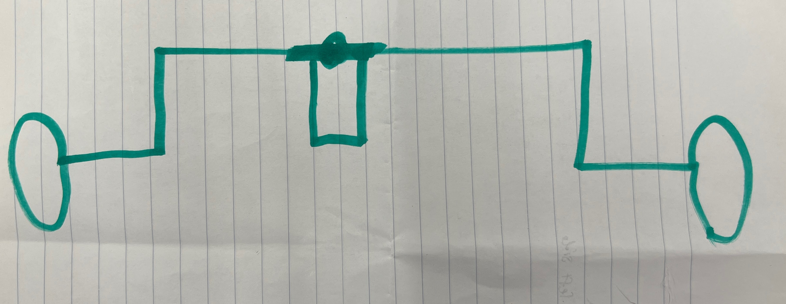
<h5>Which turned out to be this. As you can see, it is crooked and not well aligned. Adding on to the fact that the turning radius was awful because servos generate rotational and not linear motion, this was a complete fail. I went on to switch to a syncro-steering system which means that the independent wheels spin differently</h5>
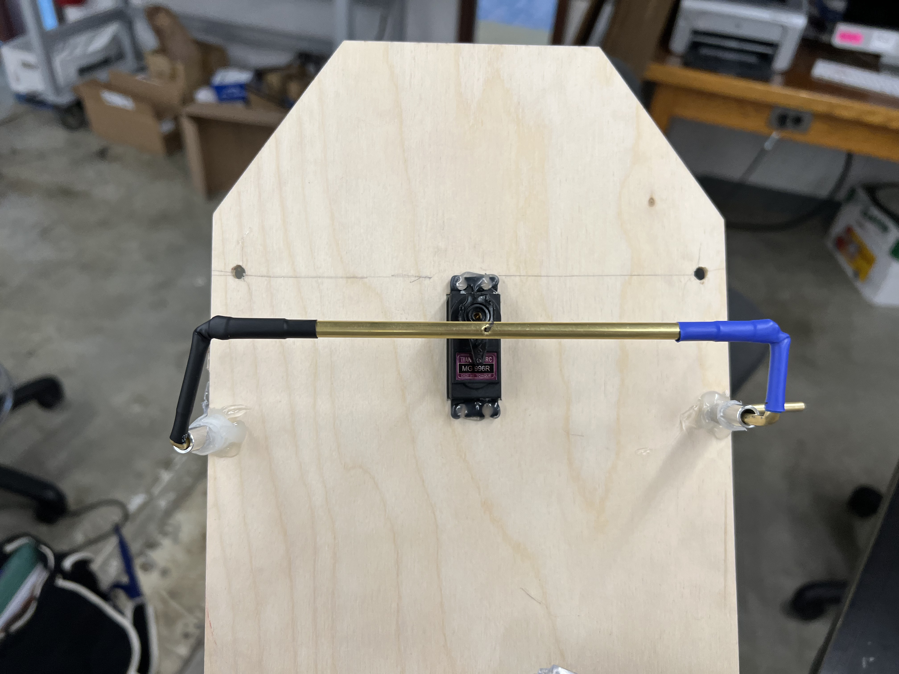
<img src="../images/FinalProject/IMG_0484.HEIC.jpg" width="400" alt="Steering Column">
<br>
<h5>Next was the Ultrasonic Sensors. Since they have a detection range of 15°, I angled them so one was pointed forward and one on each side pointed 15° away from the front sensor.</h5>
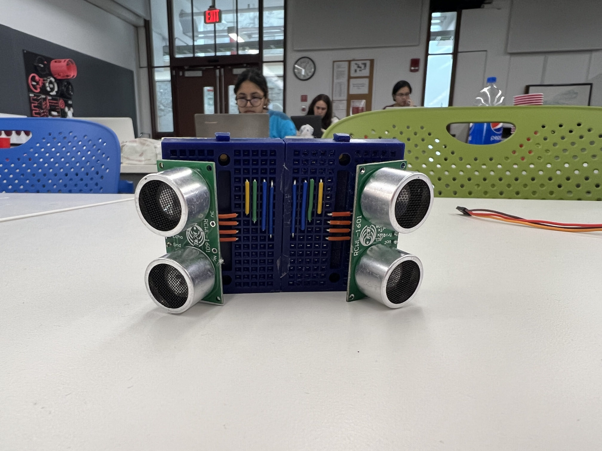
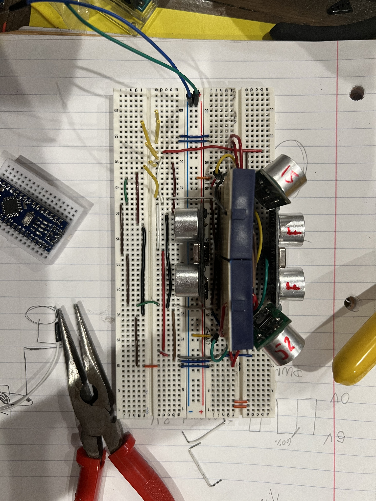
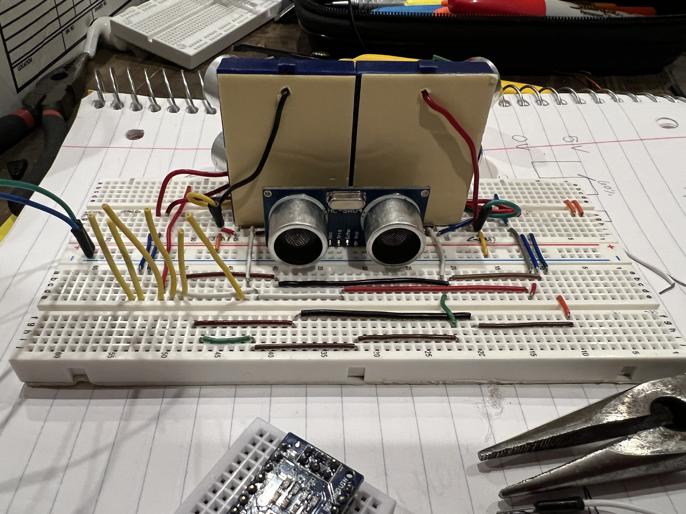
<br>
<h5>I had an issue with the wheels. As they were made of low quality rubber, they didn't have excellent grip. I proceeded to add hot glue and rubber bands around the wheels which massively improved the grip but it still wasn't excellent</h5>
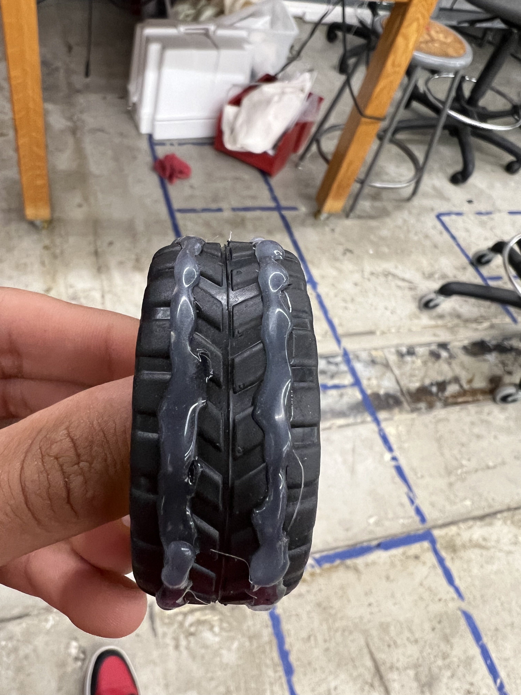
<br>
<h5>Now for the body of the car. I initially wanted to 3D print and while I did so, I was informed by Prof. Melenbrink that the print had an approximate 5% success rate and that I should consider doing a backup. I have to express my gratitude for this as the print did indeed end up failing and that piece of advice saved my life! </h5>
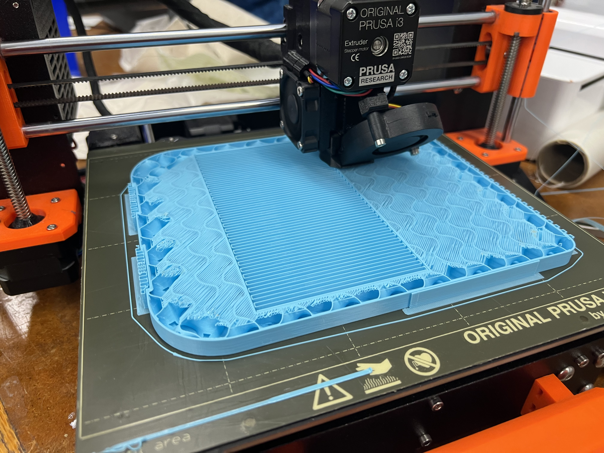
<br>
<h5>For the backup, I laser cut various pieces and assembled them togther. I made some space for the breadboard containing the ultrasound sensors and a cutout so I can press fit the motors.</h5>
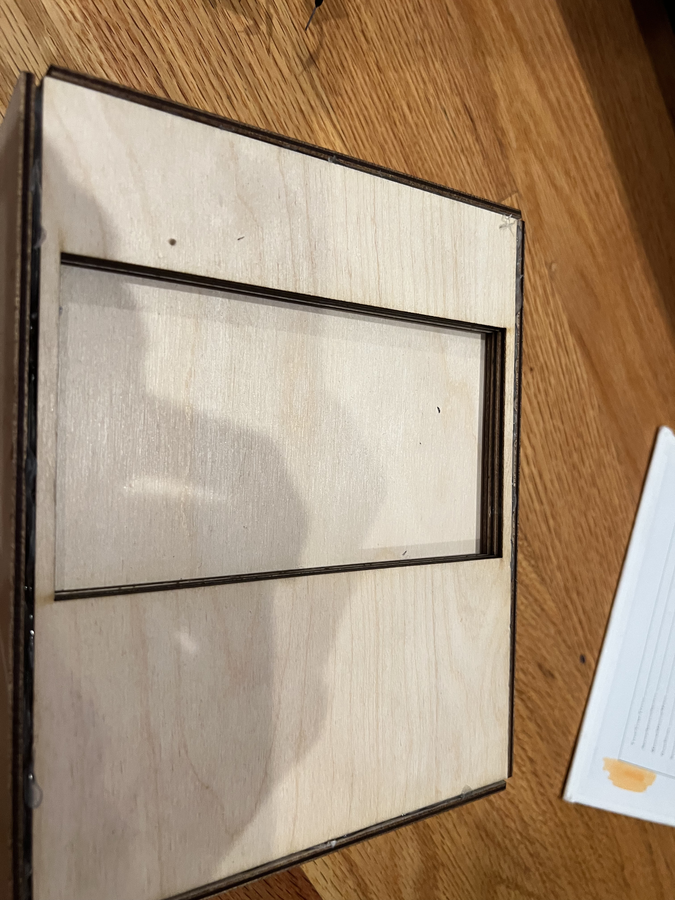
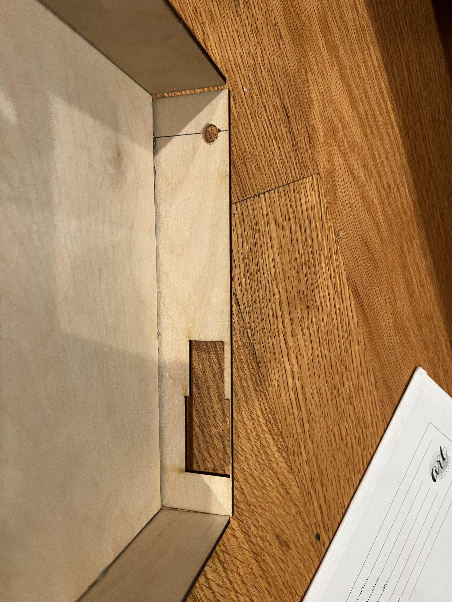
<br>
<h5>After press-fitting the motors and adding some hot glue for extra durablity and 'securness', I attached the motors to a L9110 motor control board which would then go on to be attached to the reciever ESP32</h5>
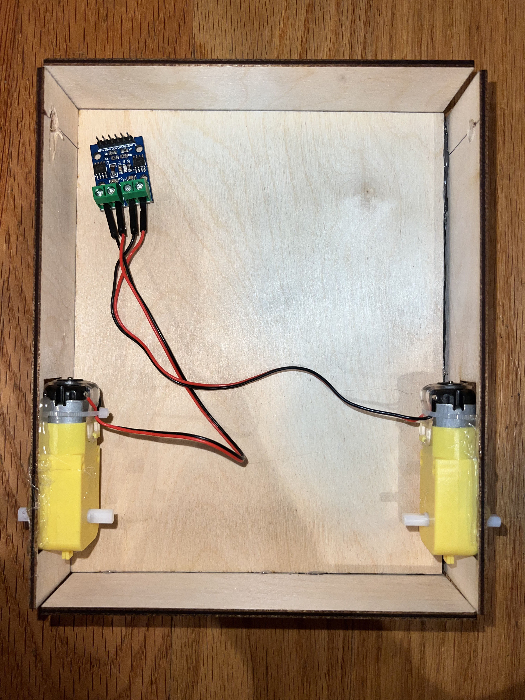
<video controls width="500" height"500" muted>
<source src="../images/FinalProject/IMG_0505.mp4" type="video/mp4">
</video>
<br>
<br>
<h5>After some testing, I upgraded the gears for the front wheels so they would spin more freely without the motor</h5>
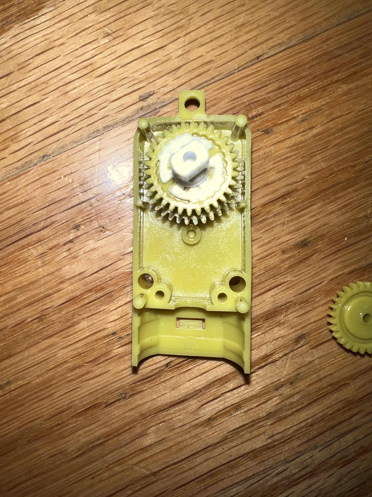
<video controls width="350" height"500" autoplay muted loop>
<source src="../images/FinalProject/IMG_0508.mp4" type="video/mp4">
</video>
<br>
<br>
<h5>Now, for the magical part of this project, an accelerometer controlled car. </h5>
<video controls width="400" height"500" muted autoplay loop>
<source src="../images/FinalProject/IMG_0511.mp4" type="video/mp4">
</video>
<video controls width="400" height"500" muted autoplay>
<source src="../images/FinalProject/COM8 2022-07-31 03-14-58.mp4" type="video/mp4">
</video>
<br>
<br>
<h5>I checked out multiples multiple ways an ESP32 can communicate to another ESP32. WIth up to 8 miles of range, I learned that LoRa was the furthest range but I needed something less overkill. Introducing ESP-NOW. A protocol developped by espressif that enables either one-way or two-way communication between ESP32s via radio communication. Since I only need to send accelerometer readings, one-way communication made the most sense.</h5>
<video controls width="400" height"500" muted autoplay loop>
<source src="../images/FinalProject/IMG_0514.mp4" type="video/mp4">
</video>
<br>
<h5>These are SOME of the sketches I used for the autopilot system</h5>
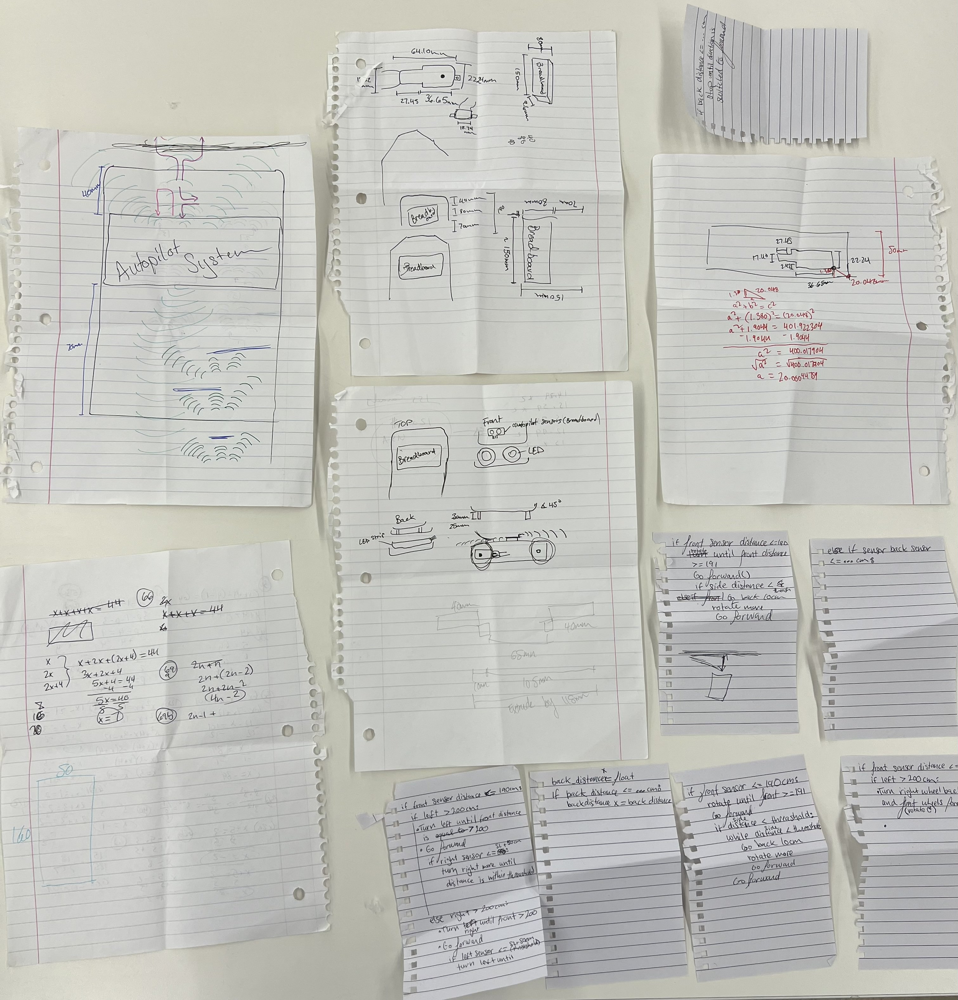
<br>
<h5>And...DONE!</h5>
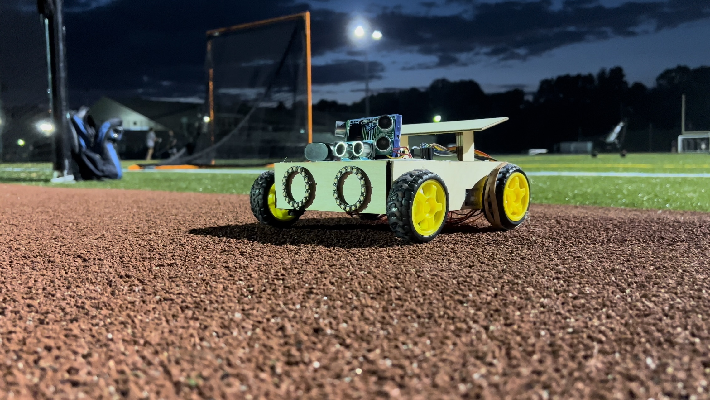